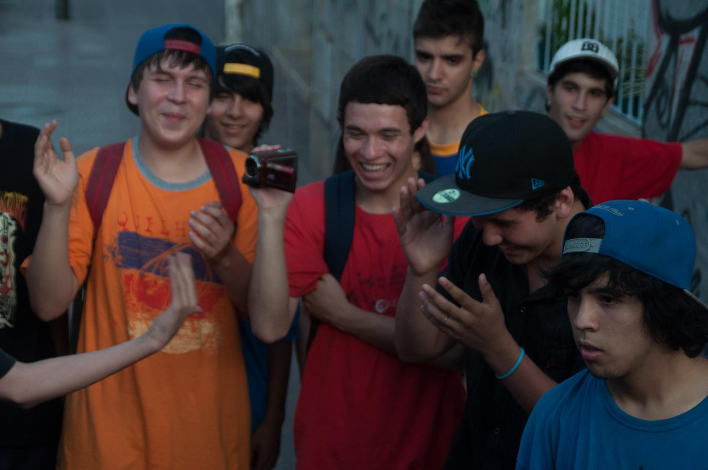
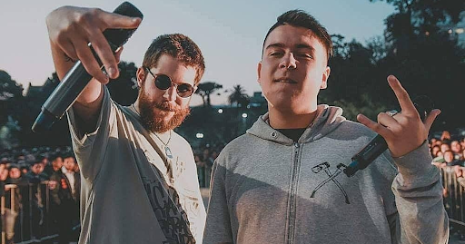
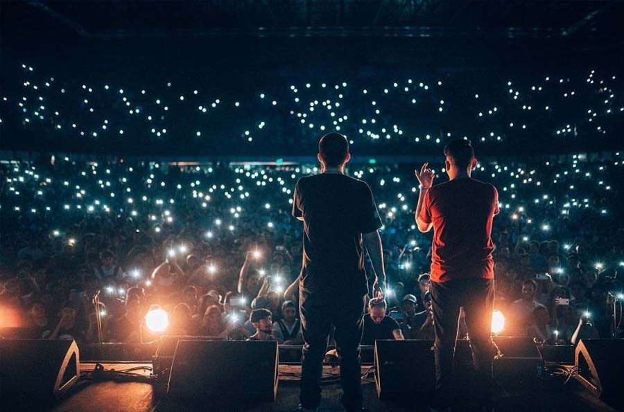
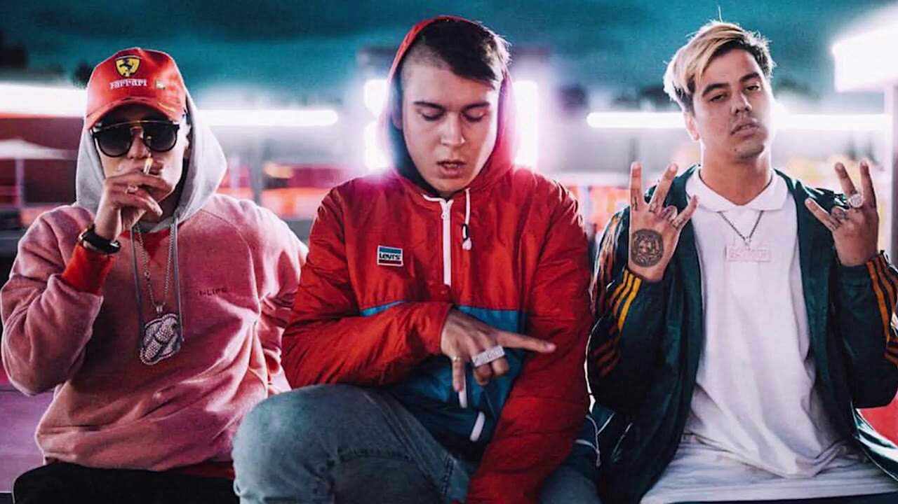
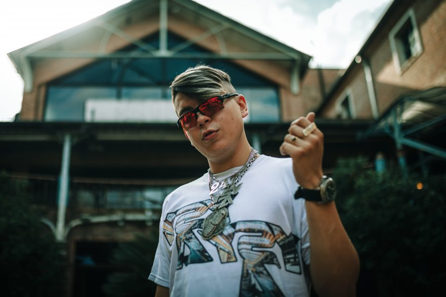
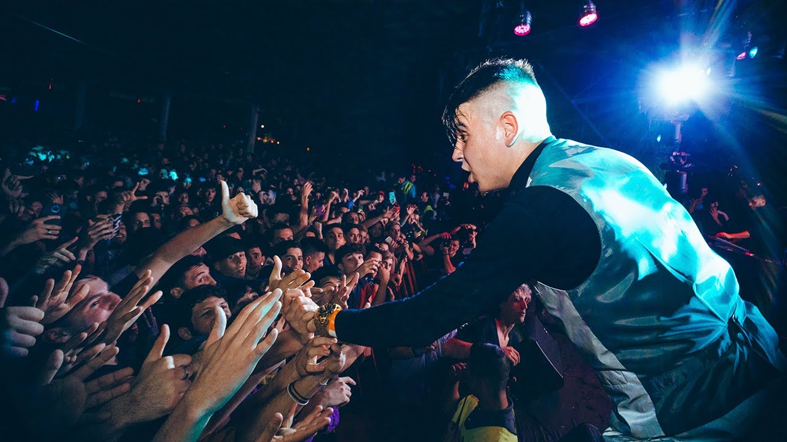
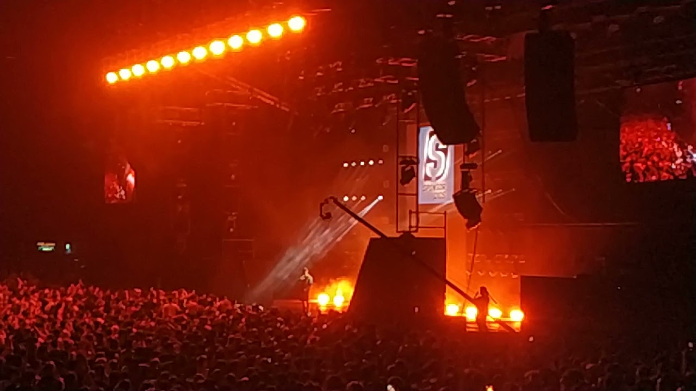

Sus comienzos
Alejo Acosta nació el 12 de julio de 1998 en Buenos Aires, hijo de padres uruguayos provenientes de Tacuarembó. Su tío los trajo a Argentina a los 35 años, en donde él se ganaba su vída como tanguero. Cuando Alejo tenía 10 años, vio un concierto del cantante Don Omar por YouTube, que le hizo prestar interés en el reggaeton, en especial a artistas como Daddy Yankee, Arcángel y De la Ghetto. A temprana edad, se mostró muy interesado por el movimiento urbano. A los 12 años aprendió a hacer beatbox, y junto a unos amigos practicaba breakdance. Con 14 años organizó un festival de fin de semana gratis en un parque, donde tocaban agrupaciones y había competencias de freestyle y breakdance. Los sustentaba con el dinero que ganaba recolectando cuando rapeaba en colectivos públicos.
Cuando cumplió 17 años se convirtió en padre. Su hijo, Bruno, tiene pequeñas apariciones en Antezana 247.
El Quinto Escalon
Inspirado por el Halabalusa, la competencia de rap más popular de Argentina en ese momento, Alejo organizó su propio evento de freestylepor Facebook, llamado El Quinto Escalón por los cinco escalones de la escalinata a la entrada al Parque Rivadavia, plaza que estaba en elbarrio donde Acosta vivía.El 11 de marzo se disputó la primera fecha, de la cual no existe ningún registro. Recién en abril se disputó lasegunda fecha, donde Alejo subió un vídeo promocionando el evento a YouTube. En esa fecha, se sumó Matías Berner, un aspirante a músico ypresentador de radio, que participó de la competición y se midió con el mismo Alejo en la final, con este último resultando ganador. En latercera fecha, se sumó el primer competidor visitante de los que usualmente iban a participar, Wolf (Damián Mansilla). En la cuarta, aAlejo se le ocurrió un formato especial, en donde un rapero debía hacer pareja con otro para enfrentar a otros dos. Allí Wolf llevó a suhermano MKS (Marcos Mansilla), uno de los raperos más destacados de Las Vegas Freestyle, otra de las competencias más renombradas delmomento, y que venía de ser campeón del Halabalusa. Esto hizo que varios competidores usuales del Halabalusa empezaran a asistir al Quinto.
Eventualmente, Berner se acabaría sumando a la organización del evento, y junto con Alejo, formarían una de las duplas de presentadoresmásicónicas de las batallas de rap en hispano. La primera idea de Muphasa fue armar un canal de YouTube donde se subiera todo elcontenidorelacionado al evento, como las batallas. En julio, ya era común ver competir a los mejores raperos de la ciudad de BuenosAires. Durante estaépoca, Muphasa formaba parte de una banda de rap rock llamada Zulu Hip Hop Jam, inspirados en Afrika Bambaataa, queacabaría desembocando enLa Cofradía de la cual Acosta acabó uniendóse
El final del Quinto Escalon
En 2016 la competencia iba creciendo de manera exponencial, y varios competidores que se convertirían en los artistas más destacados de la Argentina darían sus primeros pasos en el torneo, como Trueno, Duki, Lit Killah, Paulo Londra o Wos. Durante ese mismo año, La Cofradía tuvo su primer tour nacional de trap, en conjunto con KMD, la banda de Neo Pistea. El tour fue totalmente autogestionado por Acosta, que organizó los flyers y las ciudades a través de Excel. Poco a poco, Alejo empezó a apartarse de las batallas de rap para dedicarse enteramente a la música. Tres meses antes de la finalización del Quinto, Acosta, ahora bajo su nombre artístico YSY A, decidió formar un dúeto junto a Duki, que posteriormente acabaría sumandóse Neo Pistea, y que desembocaría en el grupo Modo Diablo.
Durante el verano de 2016 y 2017, Muphasa se separó de la Cofradía y el empresario Mario Pergolini le ofreció un programa de radio en Vorterix, además de ofrecerse a financiar las fechas de la plaza. Fue en 2017 que el Quinto pasó de organizarse en plazas a teatros debido a la masividad del torneo. Esto provocó que Alejo decidiera acabar con el evento por completo, al ver que estaba perdiendo su esencia. Durante este mismo año lanzó su primer sencillo, "Dame Droga", en YouTube.
Modo Diablo y Antezana
Durante inicios del 2018, y debido a la explosión musical de Duki, YSY A decidió organizar otro tour auto-gestionado junto a Modo Diablo. Sin embargo, el tour salió de manera inesperada, con los integrantes teniendo deudas y pidiendo dinero prestado para poder regresar de las ciudades donde estaban haciendo la gira. Durante esta época fue que lograron alquilar una localidad que denominaron "La Mansión", y donde Modo Diablo grabó dos sencillos, "Quavo" y "TRAP.N.EXPORT", que lograron juntos, más de 140 millones de visitas en YouTube y popularizaron el género de trap en Argentina. El 29 de marzo sacó su sencillo "Guapo" en colaboración con Duki, Neo Pistea, C.R.O y Kaktov, consiguiendo una gran repercusión al superar las 25 millones de visualizaciones en YouTube y las 20 millones de escuchas aproximadas en Spotify. El 4 de mayo se presentaron por primera vez en el Teatro Gran Rex, que fue sold out. El 22 de octubre sacó el sencillo "Vamo a Darle", una combinación entre trap y dancehall, que actualmente cuenta con un aproximado de 20 millones de reproducciones en YouTube.
En las giras de principio de año junto a Modo Diablo, Acosta empezó a grabar su primer álbum debut. Antezana 247 se lanzó el 11 de noviembre de 2018, un álbum conceptual donde Acosta cuenta las vivencias y experiencias que tuvo viviendo en La Mansión junto a Duki y Neo Pistea. Contó con la colaboración de Duki, Neo Pistea, Obie Wanshot y Marcianos Crew, y recibió buenas críticas. Del disco salieron los sencillos "Tamo Loco", que alcanzó el puesto 45 de Argentina en Spotify y las 10 millones de visitas en YouTube, y "Vuelta a la Luna" en colaboración con Duki, que alcanzó su pico en el puesto 33 de Spotify Argentina, posteriormente sacando el remix junto al ya mencionado rapero y junto a Neo Pistea, llegando a conseguir casi 25 millones de views en la plataforma de YouTube.
El varon del trap
El 27 de marzo de 2019 fue parte de la megacolaboración de trap del sencillo "Tumbando El Club" de Neo Pistea, que alcanzó su pico en el puesto 3 de la lista Argentina Hot 100 de Billboard, siendo considerado como el "himno del trap argentino", es el sencillo más escuchado donde participa Alejo hasta el día de hoy, más de 245 millones de views en YouTube y más de 80 millones de streams en Spotify lo convierten en un gran éxito en la carrera del rapero argentino. Durante junio y julio YSY A hizo un tour por Sudamérica llamado "Modo Demoledor Tour", en donde empezó a producir su segundo álbum de estudio. El 2 de septiembre sacó su sencillo "Traje unos Tangos", que alcanzó el puesto 45 de Spotify Argentina, y cuyo videoclip fue número 1 en tendencias de Argentina.
El 11 de noviembre publicó Hecho a Mano, en donde las 11 canciones que componen el disco están producidas cada una por un productor distinto. Un disco compuesto totalmente de trap pero con ambiciones más experimentales, no contó con colaboraciones, pero tuvo una mejor acepctación crítica que su predecesor.
El 7 de mayo de 2020 colaboró en el sencillo "Sin Conexión", junto a Bhavi. Entre junio y octubre sacó una serie de sencillos bajo el nombre de #YSYA2020, grabadas en su casa por culpa de la cuarentena por el COVID-19. El volumen 6, titulado "Un Flow de Infarto" contó con producción de Bizarrap. El 11 de noviembre sacó su primer EP, Mordiendo el Bozal, producido en total por Club Hats y Yesan. El EP contó con temáticas alrededor del amor y el sexo, pero no tuvo la misma recepción crítica que Hecho a Mano. Participó de los Premios Gardel 2020, donde interpretó Traje unos Tangos junto a reconocidos tangueros de Argentina como Cucuza Castiello y Amelia Baltar.
Trap de verdad
El 29 de enero de 2021 fue parte de las Music Sessions de Bizarrap, siendo el volumen 37, que alcanzó el puesto 13 de la lista Argentina Hot 100 y que actualmente se encuentra cerca de las 60 millones de reproducciones en YouTube y las 30 millones en Spotify. En abril formó parte del track "Pintao" del álbum de Duki, Desde El Fin del Mundo. El 25 de mayo formó parte del exitoso rémix del sencillo "TECA" de Asan y Bhavi junto a Midel, Neo Pistea y J Rei.
El 11 de noviembre de 2021, Acosta lanzó su tercer álbum de estudio, Trap de Verdad, el cual contiene el sencillo previamente estrenado "Oro y Platino".